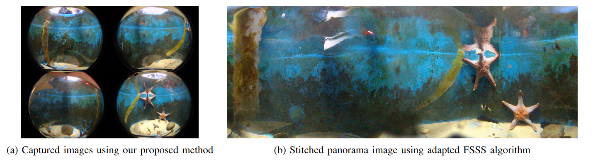

Our system functions in three main stages:
1) The camera unit triggers the fisheye cameras in a synchronised manner.
2) The transmission unit sends the images to the server via Fathom Tether.
3) The high-performance server performs computer vision algorithms such as image stitching.
Abstract
Omnidirectional camera is a cost-effective and information-rich sensor highly
suitable for many marine applications and the ocean scientific community, encompassing
several domains such as augmented reality, mapping, motion estimation, visual surveillance,
and simultaneous localization and mapping. However, designing and constructing such a high-quality
360° real-time streaming camera system for underwater applications is a challenging problem
due to the technical complexity in several aspects including sensor resolution, wide field of view,
power supply, optical design, system calibration, and overheating management. This paper presents
a novel and comprehensive system that addresses the complexities associated with the design,
construction, and implementation of a fully functional 360° real-time streaming camera system
specifically tailored for underwater environments. Our proposed system, UWA360CAM, can stream video in
real time, operate in 24/7, and capture 360° underwater panorama images. Notably, our work is
the pioneering effort in providing a detailed and replicable account of this system. The experiments
provide a comprehensive analysis of our proposed system.
Video
UWA360CAM System Overview
The UWA360CAM system comprises three distinct components, namely an underwater camera module,
a transmission module, and a topside computer processing module. The camera operates in three main stages:
1) The initial stage of the system triggers the fisheye cameras in a synchronised manner.
2) In the subsequent stage, the onboard processing unit allows the transmission of the images to the server.
3) The last stage is executed on a high-performance server to accommodate advanced computer vision algorithms
such as video stitching.
Operational Performance

Qualitatively, it is illustrated that the pictures taken by this system are clear and high-quality in
underwater environment. In addition to the image quality, further analysis the system temperature is conducted,
which is a crucial aspect for performance because high temperature can affect the overall stability of the system.
In the event that the system experiences excessive heat, it might result in malfunctions, decreased frames per
second (FPS), or even abrupt shutdown. Above figure shows the temperatures of the edge device and cameras during
functioning. It is evident that within the initial two-hour period, there is a significant rise in temperature for
both the CPU and cameras, with the former increasing from 42.5°C to 54°C, and the latter increasing
from 26.5°C to 45°C. Due to the forced convection in our airflow design, it is found that the CPU and
camera temperatures have a tendency to remain stable subsequently.
Citation
@article{pham2023uwa360cam,
title={UWA360CAM: A 360$\^{}$\{$$\backslash$circ$\}$ $24/7 Real-Time Streaming Camera System for Underwater Applications},
author={Pham, Quan-Dung and Zhu, Yipeng and Ha, Tan-Sang and Nguyen, KH and Hua, Binh-Son and Yeung, Sai-Kit},
journal={arXiv preprint arXiv:2309.12668},
year={2023}
}
Acknowledgements
This research project is supported by The Innovation and Technology Fund (ITF) and The Marine Conservation Enhancement Fund (MCEF) Hong Kong.